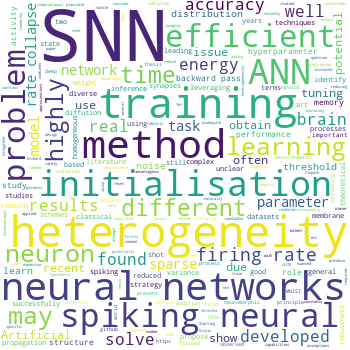

Nicolas Perez

Lab member: 2018-

Room 1008
Department of Electrical and Electronic Engineering
Imperial College
Exhibition Road
London SW7 2AZ
Department of Electrical and Electronic Engineering
Imperial College
Exhibition Road
London SW7 2AZ
Nicolas Perez is a PhD student working on understanding how spiking neural networks can use heterogeneous neuron properties to carry out multiresolution processing of sensory data.
Publications
Note that only publications as part of the Neural Reckoning group are included here (see external publications below for full list).
Preprints
2019
-
Perez-Nieves N, Leung VCH, Dragotti PL, Goodman DFM (2019)
Advantages of heterogeneity of parameters in spiking neural network training.
Cognitive Computational Neuroscience - + 1 conference paper
External publications
This is a short preview of the publications from other sources (ORCID, Semantic Scholar). Note that publications from work done outside the Neural Reckoning group are included in this list.
2021
2020